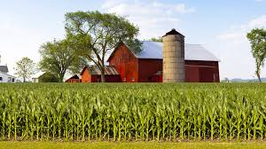
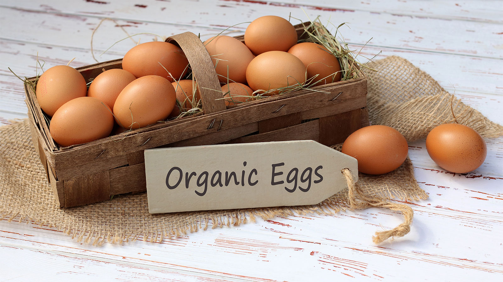
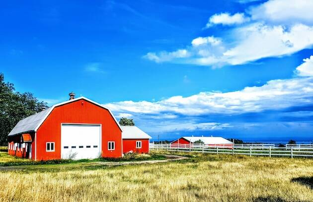
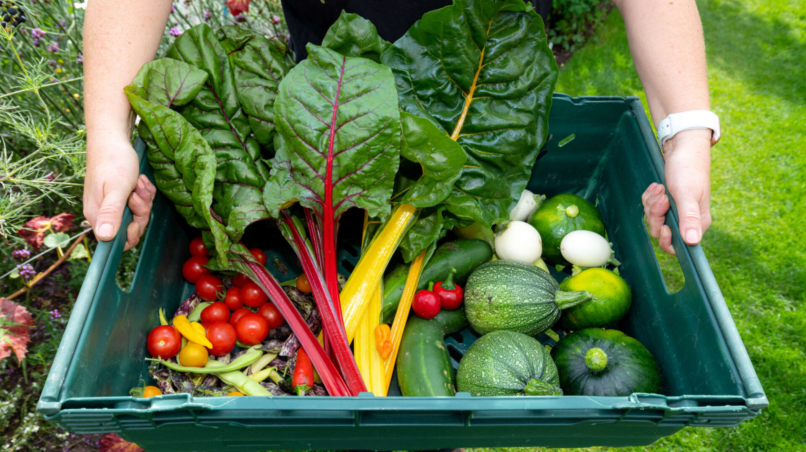
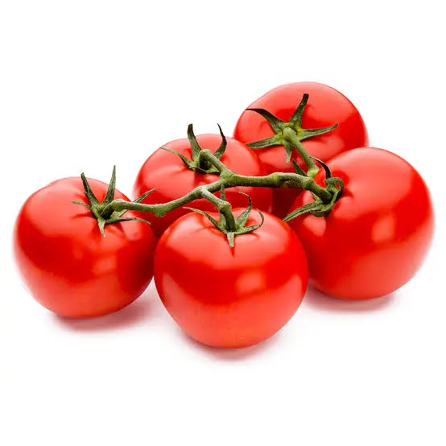
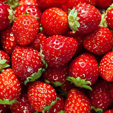

Semestral project · Exercise 3
FreshRoots Cooperative
From usability problems to a better GUI: improvements, two AI-generated concepts and our chosen design.
Where we are
Six milestones. Today we present exercise 3.
Goal of this exercise: take the problems we found in competitor apps, design fixes, generate two GUI concepts with AI, pick the better one, and show it working in a real prototype.
Recap · Exercise 1
FreshRoots Cooperative: “Know your farmer, love your food”
🏡 The company (fictional)
A cooperative of family farms around Prague. The farms produce vegetables, fruit, dairy, eggs and bread, but they have no shared online sales channel.
💻 The product they want
A web marketplace where people living in the city can see who grows their food and how far away the farm is, buy from several farms in one order, and choose a delivery time.
Recap · Exercise 2
Who we design for
Anna, 34
Project manager · mother of two · Prague 6
- Goal
- Order fresh food for the week in under 5 minutes, on her phone, in the evening
- Frustration
- Delivery fees that show up only at checkout; delivery times that don't fit her schedule
“I just want to know what it costs and when it arrives.”
Martin, 67
Retired teacher · cooks every day · desktop user
- Goal
- Buy from farmers he can trust, and ask them questions
- Frustration
- Small text, cluttered pages, can't tell where the food comes from
“Supermarket ‘local’ labels mean nothing to me.”
Lin, 23
International student from Taiwan · limited budget
- Goal
- Buy cheap, fresh vegetables near her dorm
- Frustration
- Local farm sites are in Czech only, so she can't compare prices or units
“I end up translating every page with my phone camera.”
Recap · Exercise 2
Key use cases
| # | Use case | Main persona | Success means… |
|---|---|---|---|
| UC1 | Find local products by category and distance | Anna, Lin | Relevant products found in under 30 s |
| UC2 | Learn about a farm and contact the farmer | Martin | Farm story, method and contact on one page |
| UC3 | Put an order together from several farms | Anna | One cart, with a clear total and delivery fee |
| UC4 | Check out and choose a delivery slot | Anna | Slot chosen, order confirmed, no surprises |
| UC5 | Use the whole site in your own language | Lin | Every label, product and message translated |
| UC6 | Register / log in, see past orders | All | Order history and status in “My account” |
| UC7 | Farmer: manage products, prices and stock | James (farmer) | Stock change visible in the shop at once |
| UC8 | Farmer: handle orders and answer customers | James (farmer) | Every order has a status; no lost messages |
Exercise 2 · Usability study
What we tested
🛒 Rohlik.cz
Large online grocery store
- + Fast checkout, clear delivery slots
- − Product origin and farm hard to find
- − Can't filter by distance or farm
🗺️ Scuk.cz
Directory and map of local producers
- + Shows who the producer is and where
- − No ordering: you leave the site to buy
- − Czech only, crowded map
📱 Farm social pages
Ordering over Facebook / Instagram messages
- + Personal, trustworthy
- − No cart, no prices, no confirmation
- − One farm = one separate order
Method: think-aloud test with 5 tasks based on UC1–UC5 and our 3 personas, problems rated on Nielsen's severity scale (0–4) and linked to his 10 usability heuristics.
Exercise 3 · Step 1
Main usability problems found
| # | Problem | Seen in | Heuristic | Severity |
|---|
Exercise 3 · Step 2 · interactive
Each problem → our solution
Exercise 3 · Improved use case
UC1 + UC3 + UC4: “Buy vegetables from a farm within 5 km for Friday evening”
Competitors (Scuk.cz → Facebook) 0
FreshRoots 0
Exercise 3 · Step 3
Generating two GUI concepts with AI
Prompt · Version A: “Map-first”
Desktop web UI mockup for "FreshRoots Cooperative", an online marketplace connecting local farmers near Prague with city consumers. MAP-FIRST layout: a large interactive map fills 60% of the screen with farm pins and 5 km / 10 km distance rings; a sidebar lists farms sorted by distance; selecting a farm shows its products. Green #2d5a3d + cream palette, rounded cards, clean modern typography, header with a 5-language switcher.
Prompt · Version B: “Catalog-first”
Same brand and palette. CATALOG-FIRST layout: hero banner with a big search bar, category chips (fruit, vegetables, dairy, eggs, bakery) and a distance filter; a product grid where EVERY card shows farm name, distance, organic badge, price per unit and an Add-to-cart button that turns into a quantity stepper. A cart summary shows the delivery fee and a free-delivery progress bar. Header with a 5-language switcher.
Exercise 3 · Two concepts · interactive
Version A: Map-first

Green Valley2.3 km · veg
3.0 km · veg

Free Range4.1 km · eggs

Sunny Acres4.7 km · veg

Berry Best5.0 km · fruit


Subtotal €11.87
Delivery €3.00
Exercise 3 · Choosing a direction · interactive
Weighted evaluation: drag the weights
| Criterion | Weight | A · Map | B · Catalog |
|---|
Scores are 1–5, agreed by the team. A total is the sum of weight × score, shown as a % of the maximum possible.
Decision
We chose B (catalog-first) and kept A's map as its own page
- P1 Every product card shows farm, distance and an organic badge
- P2 Distance filter (3 / 5 / 10 km) and an interactive map with 5 / 10 km rings
- P3 Delivery fee and free-delivery progress visible in the cart
- P4 Full UI in 5 languages, remembered between visits
- P5 “Add to cart” becomes a quantity stepper; cart badge animates; toast messages confirm actions
- P6 “Send message” to the farmer and “Follow farm” right on the farm page
- P7 Choose a 2-hour delivery slot in checkout
- P8 Large cards, clear hierarchy, keyboard support and visible focus
- + Cart grouped by farm, so it's clear who you are buying from
- P9 Farmer portal: orders, stock and messages in one place (see next slide)
Built with plain HTML, CSS and JavaScript: hash routing, data stored as JS objects, and cart, account and language saved in localStorage. No framework and no server needed.
Exercise 4 · From shop to platform · interactive
One platform, two kinds of users
New persona · James, 52
Owner of Green Valley Farm · uses his phone between field work
Goal: sell directly to city customers and update stock in 2 minutes.
Frustration: orders scattered across calls, SMS and Facebook.
Why it matters
The cooperative is a marketplace, so it only works if farmers find it easy too. Each step above is shared data: when a customer orders, stock drops, and when the farmer changes a status, the customer sees it.
Exercise 4 · What we built
Customer account and farmer portal
👤 My account (customer)
- 📦 Order history with a 4-step status tracker for each farm
- 🔁 Order again in one click, keeping within available stock
- ⭐ Followed farms
- 💬 Messages to farmers, with their replies
- 🏠 Profile and default address, which pre-fills checkout (Anna's checkout gets faster)
- ⏳ Shop shows “Only 3 left” and “Sold out”; you can't add more than the stock
🧑🌾 Farmer portal
- 📊 Overview: products on sale, low stock, open orders, revenue, unanswered messages
- 🥕 Product table: edit price and stock in place, on-sale switch, delete
- ➕ Add a product with validation and an optional Czech name
- 📦 Orders: only this farm's part, with address and slot, plus status buttons
- 💬 Reply to customer questions
- ↺ Reset demo data before each presentation
anna@example.com / demo123
farmer hello@greenvalley.example / farm123
· all of this works in all 5 languages
Exercise 4 preview · live
Live prototype: try it here
Exercises 5–6
Next steps
🧪 Test both sides
Customers: the same 5 tasks we gave on the competitor apps (time, errors, SUS score). Farmers: “add a product”, “mark an order as delivered”, “answer a question”. Compare the results with the competitors.
🔧 Improve
Fix what the tests find. Ideas: product detail pages, “notify me” when a seasonal product is back, e-mail/SMS when an order status changes, prices in CZK.
♿ Polish
Accessibility check (contrast, screen reader), mobile testing on real phones, and a native-speaker review of all 5 translations.
Thank you!
Questions? Let's try the prototype together.
Zhang Yiwen · Chien Ching Wen · Huong Huong Nguyen